Le Portugal est mes racines. La Suisse est aujourd'hui le pays où je construis mon avenir. Cette présentation est le pont entre ces deux parties de ma vie.
Relief marqué, collines, vallées verdoyantes et villages traditionnels.
SUD : PLAINE
Grands espaces ouverts, paysages doux et lumières intenses.
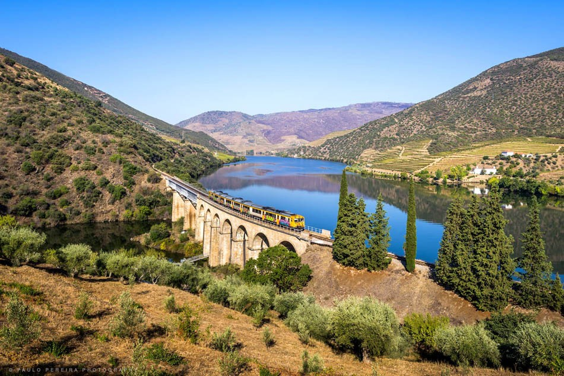
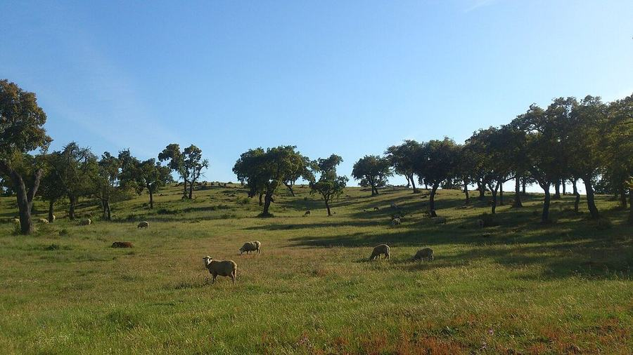
LE CLIMAT
Un climat influencé par deux forces naturelles
Le climat du Portugal est influencé par le courant du Nord (océan Atlantique) et par les masses d'air chaudes venant du nord de l'Afrique.
NORD : FROID
Hivers plus froids et pluvieux, étés doux.
SUD : CHAUD
Hivers doux et ensoleillés, étés chauds et secs.
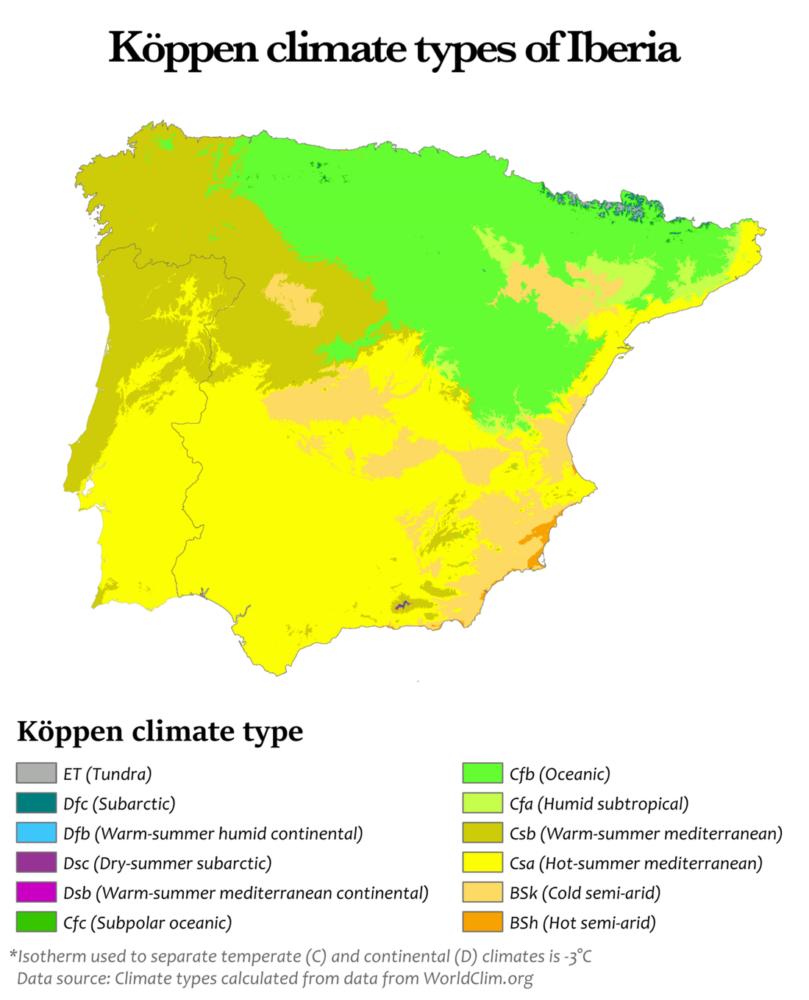
RELIEF & MONTAGNES
Un relief contrasté
Chaînes montagneuses au nord.
Collines et vallées au centre.
Vastes plaines au sud.
Côtes découpées et falaises face à l'Atlantique.
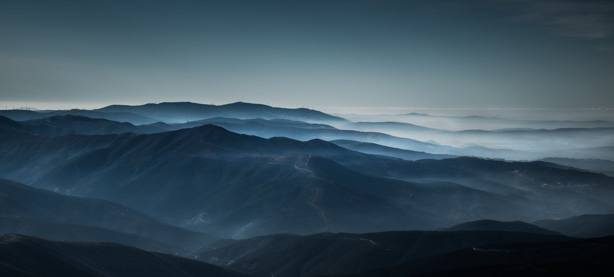
LES ÎLES DU PORTUGAL
Madère et les Açores
Les deux archipels sont nés de volcans au milieu de l'Atlantique : les Açores à environ 1 400 km de Lisbonne, Madère à près de 1 000 km. Ce sont aujourd'hui deux régions autonomes du Portugal.
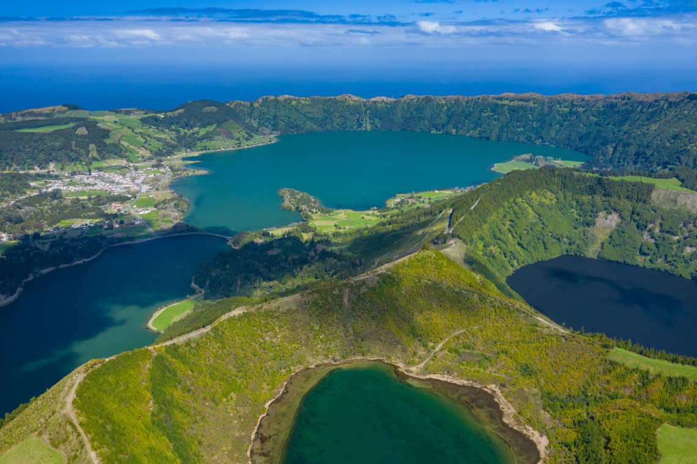
Sete Cidades (São Miguel) : un lac vert et un lac bleu au fond d'un immense cratère.
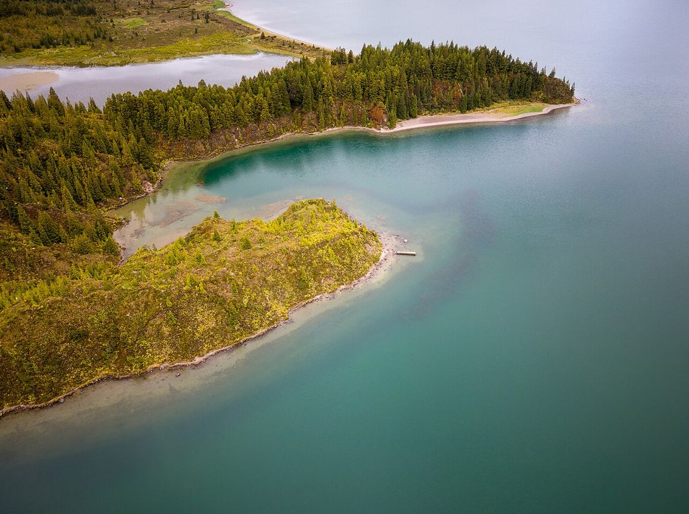
La Lagoa do Fogo, au cœur de São Miguel.
AÇORES
Neuf îles réparties sur plus de 600 km. Les navigateurs portugais découvrent les premières vers 1427 et les peuplent à partir des années 1430 ; Flores et Corvo, les plus à l'ouest, ne sont atteintes qu'en 1452. Lacs de cratère, sources chaudes, baleines et hortensias.
9ÎLES
1427DÉCOUVERTE DES PREMIÈRES ÎLES
2 351 mLE PICO, PLUS HAUT SOMMET DU PAYS
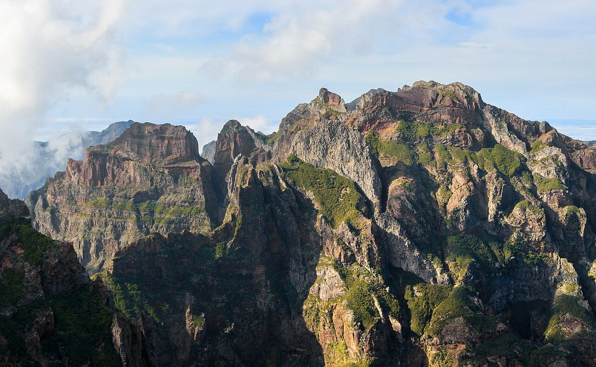
Le Pico do Arieiro (1 818 m), souvent au-dessus des nuages.
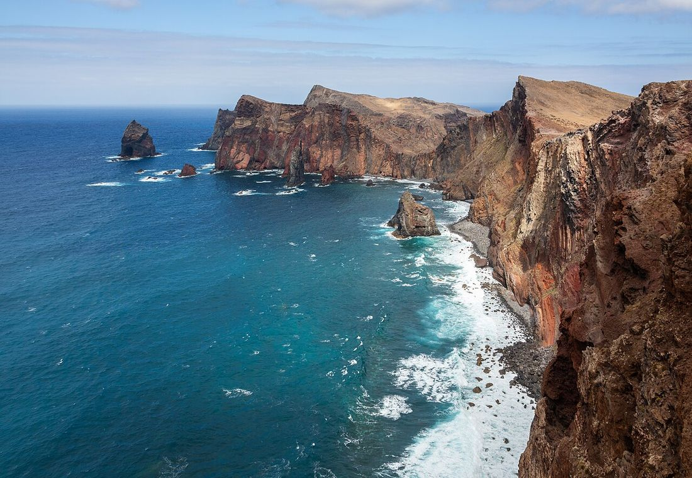
La Ponta de São Lourenço, à l'extrémité est de Madère.
MADÈRE
Deux îles habitées : Madère et Porto Santo (les îles Desertas et Selvagens, elles, sont inhabitées). João Gonçalves Zarco et Tristão Vaz Teixeira découvrent Porto Santo en 1418, puis Madère en 1419. Falaises vertigineuses, levadas et douceur toute l'année.
2ÎLES HABITÉES
1419DÉCOUVERTE DE MADÈRE
1976RÉGIONS AUTONOMES DEPUIS
NATURE & BIODIVERSITÉ
Une nature riche et préservée
Forêts, parcs naturels et réserves protégées.
Faune et flore variées, dont plusieurs espèces endémiques.
Un engagement fort pour l'environnement : le parc éolien du Haut-Minho était, à son ouverture en 2008, l'un des plus grands d'Europe.
PETITS FAITS ÉTONNANTS
Le point culminant du pays se trouve aux Açores (Pico, 2 351 m). Sur le continent, c'est la Serra da Estrela (1 993 m).
Le Portugal n'a qu'un seul voisin terrestre : l'Espagne.
Il y a des empreintes de dinosaures vieilles de 175 millions d'années, près de Fátima (Pedreira do Galinha) ! Et dans la vallée du Côa (Douro), des gravures préhistoriques de plus de 20 000 ans.
Le cabo da Roca est le point le plus occidental de l'Europe continentale : « là où la terre finit et où la mer commence » (Camões).
CARAMULO, VISEU — CHEZ LUÍS
Ma ville, mon origine
Caramulo est un village de montagne au centre du Portugal, terre du peuple lusitanien.
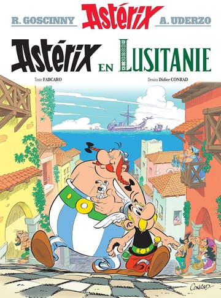
Le peuple lusitanien, même dans Astérix !« Astérix en Lusitanie » (2025), le dernier album de la série.
Un peuple de navigateurs, une histoire de découvertes
Petite nation, grand destin : le Portugal a joué un rôle majeur dans l'histoire du monde, de la mer aux idées.
Le drapeau portugais
Le vert symbolise l'espoir et le rouge le sang versé pour la nation. Au centre, la sphère armillaire, un instrument d'astronomie utilisé par les navigateurs, célèbre les grandes découvertes maritimes des XVe et XVIe siècles.
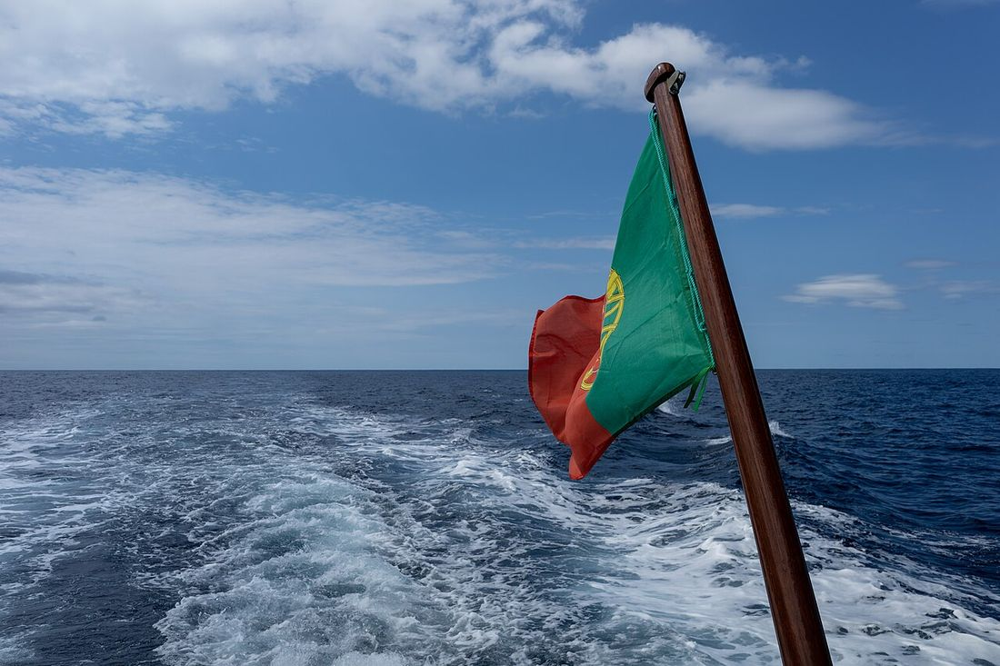
La construction du Portugal
24 juin 1128 : à la bataille de São Mamede, Afonso Henriques prend le contrôle du Comté de Portugal. 1143 : par le traité de Zamora, Alphonse VII de León et de Castille reconnaît l'indépendance du Portugal.
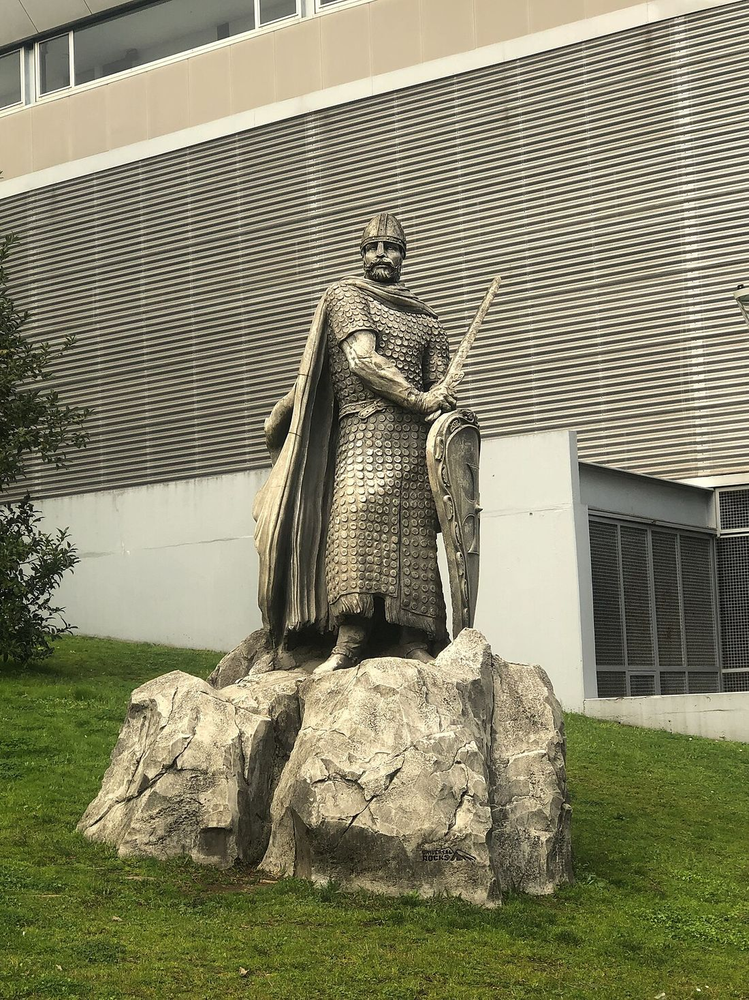
Traité de Windsor (1386)
Le plus ancien traité toujours en vigueur. Alliance avec l'Angleterre qui a résisté à deux invasions de Napoléon.
Popularisé en Angleterre par la reine portugaise Catherine de Bragance. Une légende raconte que le mot « Tea » viendrait de « Tem ervas aromáticas ? », écrit sur les caisses.
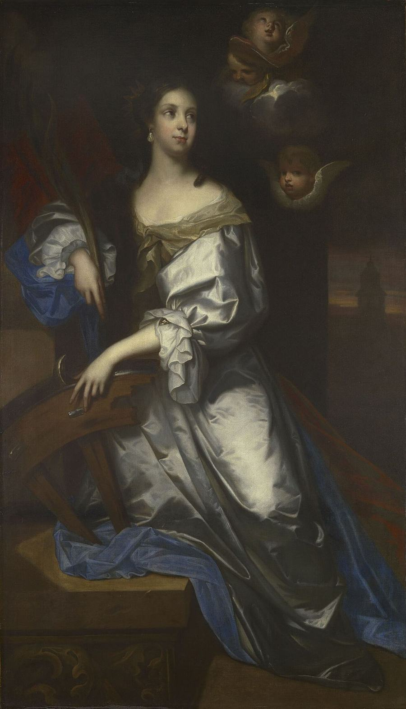
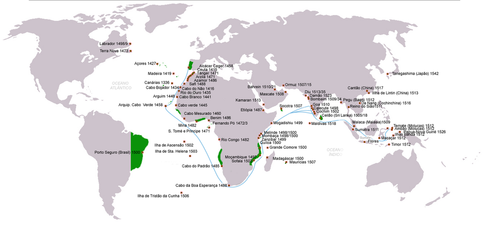
Un empire de routes maritimes
Les navigateurs portugais ont ouvert des routes commerciales vers le monde entier.
Traité de Zamora : le royaume de Portugal est reconnu. Dom Afonso Henriques devient son premier roi.
1297
Traité d'Alcañices : les frontières du pays sont fixées, parmi les plus anciennes d'Europe.
1415
Prise de Ceuta : début de l'expansion maritime portugaise.
1494
Traité de Tordesillas : le Portugal et l'Espagne se partagent les terres à découvrir.
1498
Vasco de Gama atteint l'Inde par la mer en contournant l'Afrique.
1500
Pedro Álvares Cabral arrive au Brésil.
1640
Après 60 ans d'union avec l'Espagne, le Portugal retrouve son indépendance le 1er décembre.
1755
Un tremblement de terre suivi d'un tsunami détruit Lisbonne. Le marquis de Pombal reconstruit la ville.
1822
Le Brésil proclame son indépendance.
1910
Fin de la monarchie : la République est proclamée le 5 octobre.
1974
Révolution des Œillets (25 avril) : fin de la dictature de l'Estado Novo.
1986
Le Portugal entre dans la Communauté européenne, l'actuelle Union européenne.
1999
Macao est rendue à la Chine : fin de près de six siècles d'empire.
2002
L'euro remplace l'escudo dans les porte-monnaie.
2007
Signature du traité de Lisbonne, qui organise encore aujourd'hui l'Union européenne.
CE QU'ON SAIT MOINS
Six histoires surprenantes
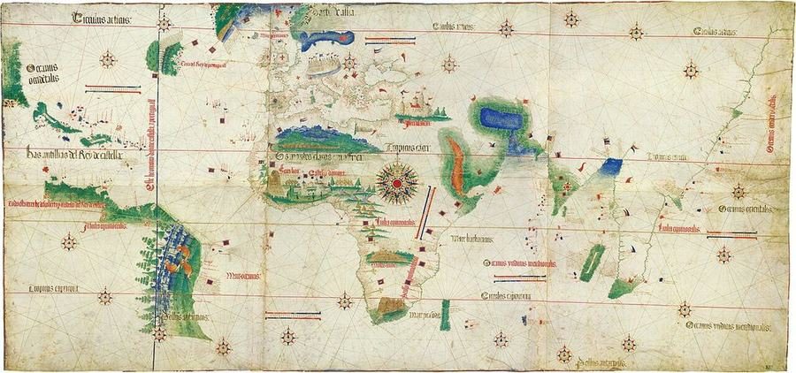
Le planisphère de Cantino (1502), l'une des plus anciennes cartes montrant la ligne de Tordesillas.
01
Le monde coupé en deux
En 1494, le Portugal et l'Espagne signent le traité de Tordesillas : une ligne imaginaire, tracée du nord au sud dans l'Atlantique, partage entre eux les terres à découvrir. C'est à cause de cette ligne qu'on parle aujourd'hui portugais au Brésil.
En 1543, des marchands portugais débarquent sur l'île de Tanegashima : ce sont les premiers Européens à atteindre le Japon. Ils y apportent les armes à feu, le pain — en japonais, « pan » vient du portugais « pão » — et, selon une théorie répandue, l'idée de la tempura.
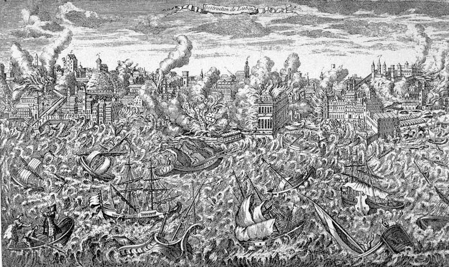
Gravure de l'époque montrant Lisbonne en ruines et le tsunami dans le port.
03
Le jour où Lisbonne a tremblé
Le 1er novembre 1755, un séisme suivi d'un tsunami et d'incendies détruit Lisbonne et fait des dizaines de milliers de morts. Le marquis de Pombal reconstruit la Baixa avec des rues droites et la « gaiola pombalina », une cage en bois qui protège les immeubles des secousses : l'une des premières constructions parasismiques au monde. Son enquête auprès des paroisses est considérée comme l'un des débuts de la sismologie moderne.
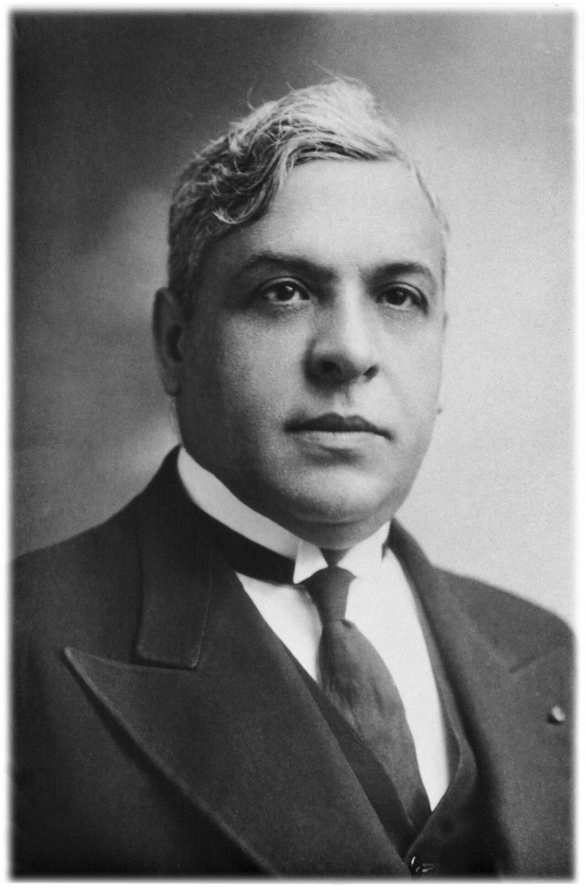
Aristides de Sousa Mendes (1885–1954).
04
Un consul contre la dictature
En juin 1940, à Bordeaux, le consul Aristides de Sousa Mendes désobéit aux ordres de Salazar et délivre des visas à des milliers de réfugiés fuyant les nazis, dont de nombreux Juifs. Sanctionné et privé de sa carrière, il meurt dans la pauvreté en 1954. Il est reconnu « Juste parmi les nations » en 1966 et honoré au Panthéon national portugais en 2021.
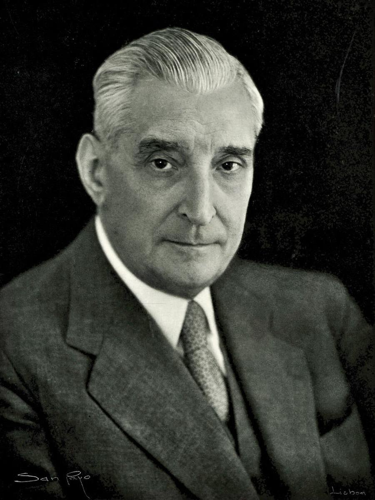
António de Oliveira Salazar, à la tête du pays de 1932 à 1968.
05
48 ans de dictature
De 1926 à 1974, le Portugal vit sous une dictature, dirigée surtout par António de Oliveira Salazar : censure, police politique (la PIDE), prisonniers politiques. Le pays reste pauvre et isolé. Dans les années 1960, des centaines de milliers de Portugais émigrent, souvent clandestinement — « a salto » — vers la France.
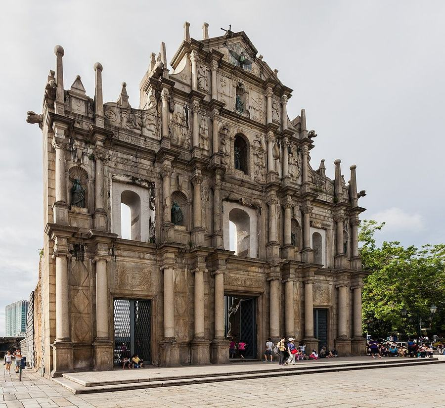
Macao, dernier territoire portugais d'outre-mer, rendu à la Chine en 1999.
06
La fin d'un empire
De 1961 à 1974, le Portugal mène une guerre en Angola, en Guinée-Bissau et au Mozambique pour garder ses colonies. Après la Révolution des Œillets, elles deviennent indépendantes et des centaines de milliers de « retornados » rentrent au Portugal. En 1999, la remise de Macao à la Chine met fin à près de six siècles d'empire.
1910RÉPUBLIQUE DEPUIS
1976CONSTITUTION ACTUELLE
230DÉPUTÉS AU PARLEMENT
5 ansMANDAT DU PRÉSIDENT
1986DANS L'UNION EUROPÉENNE DEPUIS
LA SÉPARATION DES POUVOIRS
Qui fait quoi ?
Le Portugal est une république semi-présidentielle : le pouvoir est partagé entre quatre organes de souveraineté.
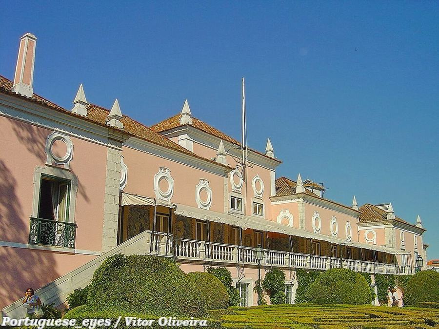
CHEF DE L'ÉTAT
Président de la République
Élu au suffrage universel direct pour 5 ans (2 mandats consécutifs au maximum). Il peut dissoudre le Parlement et opposer son veto aux lois.
Depuis mars 2026 : António José Seguro
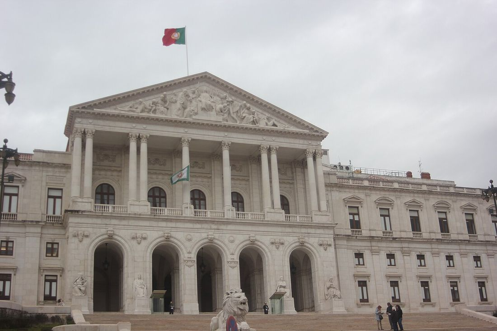
POUVOIR LÉGISLATIF
Assemblée de la République
230 députés élus pour 4 ans à la proportionnelle. Elle vote les lois et le budget, et contrôle le gouvernement.
Siège : palais de São Bento, Lisbonne
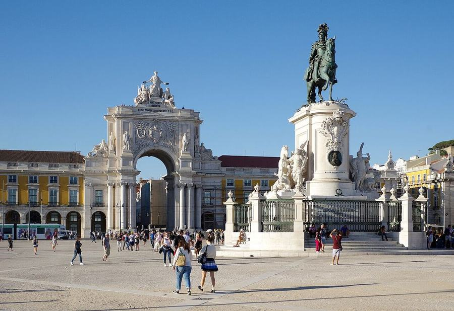
POUVOIR EXÉCUTIF
Gouvernement
Dirigé par le Premier ministre, nommé par le Président selon les résultats des élections. Il est responsable devant le Parlement.
Premier ministre : Luís Montenegro
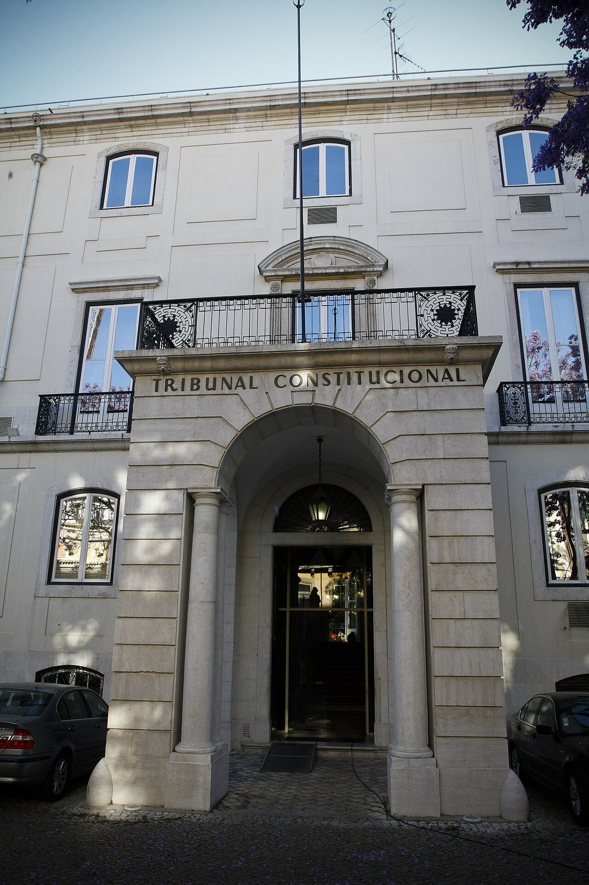
POUVOIR JUDICIAIRE
Tribunaux
Indépendants des autres pouvoirs. Le Tribunal constitutionnel veille au respect de la Constitution.
OrganisationÉtat unitaire, 2 régions autonomes (Açores, Madère)26 cantons très autonomes
Le peuple voteÉlections ; référendums raresVotations plusieurs fois par an
EuropeMembre de l'UE depuis 1986, zone euroHors UE : accords bilatéraux, Schengen
25 · IV · 1974
La Révolution des Œillets
Le 25 avril 1974, de jeunes officiers renversent presque sans violence la dictature de l'Estado Novo, au pouvoir depuis 48 ans. Le signal est donné par deux chansons à la radio : le 24 avril à 22 h 55, « E Depois do Adeus » de Paulo de Carvalho, sur les Emissores Associados de Lisboa, prévient les militaires de se préparer ; puis à 0 h 20, « Grândola, Vila Morena » de Zeca Afonso, sur Rádio Renascença, lance les opérations. La population offre des œillets rouges aux soldats, qui les glissent dans le canon de leurs fusils.
Aujourd'hui, le 25 avril est un jour férié : le « Dia da Liberdade », jour de la Liberté.
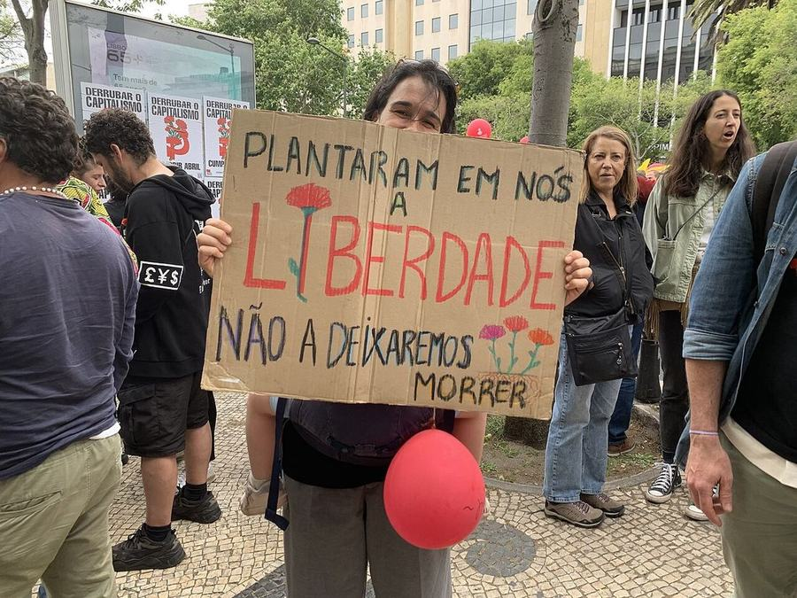
Lisbonne, 25 avril 2024 : 50 ans après, la foule défile encore : « Ils ont planté en nous la liberté ».
Les deux signaux radio
22:55« E Depois do Adeus »Paulo de Carvalho · Emissores Associados de Lisboa
00:20« Grândola, Vila Morena »Zeca Afonso · Rádio Renascença
ÉCOUTEZ L'HISTOIRE
Les deux chansons de la révolution
Cliquez pour écouter un extrait des deux signaux qui ont lancé le 25 avril.
24 · IV · 1974 — 22:55
E Depois do Adeus
Paulo de Carvalho · Emissores Associados de Lisboa
Premier signal : les militaires doivent se préparer.
25 · IV · 1974 — 00:20
Grândola, Vila Morena
Zeca Afonso · Rádio Renascença
Deuxième signal : les opérations commencent. La chanson devient l'hymne de la liberté.
Extraits de 30 secondes fournis par Spotify (connexion Internet nécessaire).
Famille, accueil et saudade : les Portugais sont attachés à leurs traditions et présents sur tous les continents.
10,6 MHABITANTS
≈ 2,9 MRÉGION DE LISBONNE
≈ 1,7 MRÉGION DE PORTO
≈ 81 ansESPÉRANCE DE VIE
≈ 260 MLUSOPHONES DANS LE MONDE
LA VIE AU QUOTIDIEN
Ce qui compte pour les Portugais
La famille
Le cœur de la société. Les grands repas du dimanche réunissent souvent plusieurs générations.
L'accueil
Les Portugais sont réputés pour leur gentillesse et leur hospitalité envers les visiteurs.
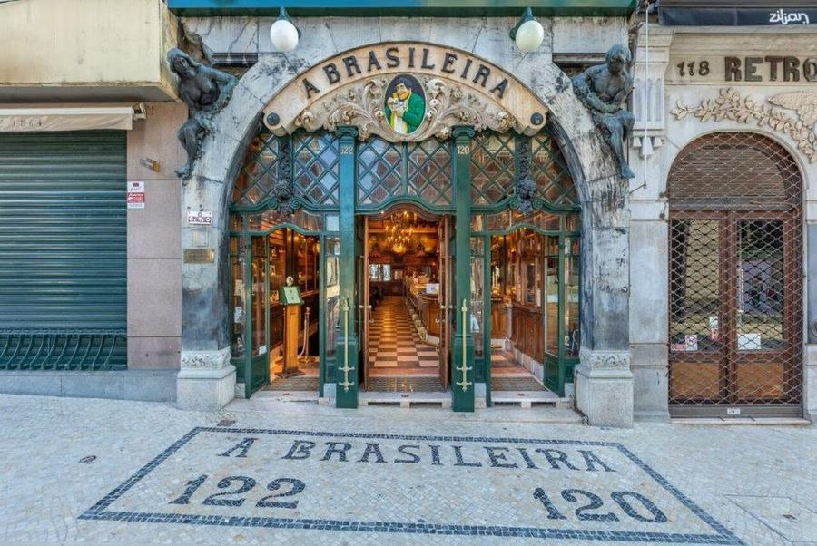
Le café
Une « bica » à Lisbonne ou un « cimbalino » à Porto : le petit café est un rituel de chaque jour.
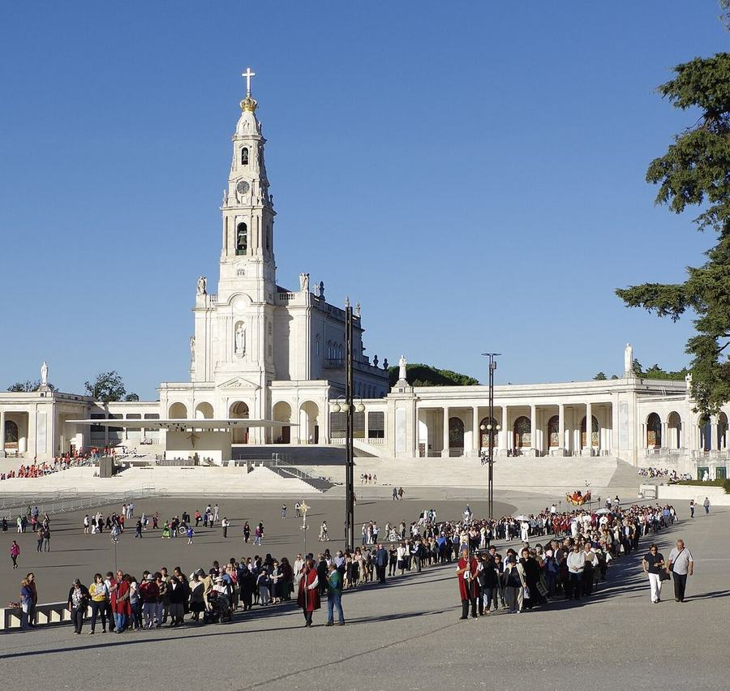
La foi
Pays de tradition catholique. Le sanctuaire de Fátima attire des millions de pèlerins chaque année.
LA LANGUE PORTUGAISE
Une langue parlée sur quatre continents
Le portugais est la langue officielle de 9 pays et l'une des langues les plus parlées au monde. Au Portugal, le mirandais est aussi reconnu officiellement depuis 1999.
La saudade, c'est la nostalgie douce-amère de quelqu'un ou de quelque chose que l'on aime et qui est loin. Un sentiment que connaît bien chaque Portugais vivant à l'étranger.
UN PEUPLE DE VOYAGEURS
La diaspora portugaise
Environ 2 millions de personnes nées au Portugal vivent à l'étranger, sans compter leurs descendants. Les plus grandes communautés se trouvent notamment en France, en Suisse, au Royaume-Uni, en Espagne, aux États-Unis et au Brésil.
—
EN SUISSE
Environ 250 000 Portugais vivent en Suisse : l'une des plus grandes communautés étrangères du pays. J'en fais partie depuis 2013.
ÉCONOMIE
De la crise à un nouvel élan
La crise de 2011
En pleine crise de la dette, le Portugal reçoit 78 milliards d'euros de l'UE et du FMI, en échange d'une forte austérité. Il sort du programme en 2014 et rembourse le FMI en avance, dès 2018.
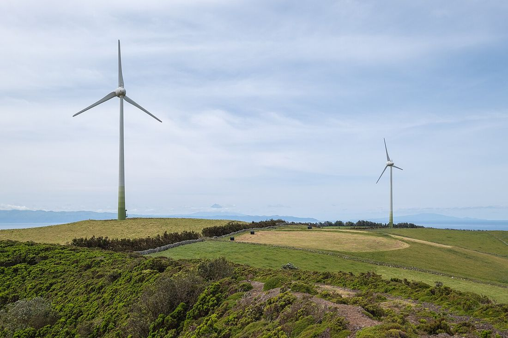
Champion du renouvelable
Environ 71 % de l'électricité consommée en 2024 venait d'énergies renouvelables : barrages, éoliennes et soleil.
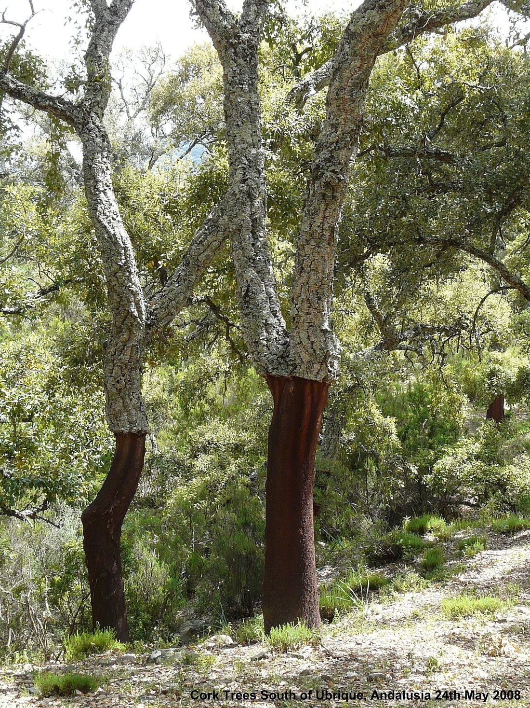
Cortiça
Le pays du liège
Environ la moitié du liège mondial vient du Portugal. On écorce le chêne-liège à la main tous les 9 ans environ, sans abattre l'arbre.
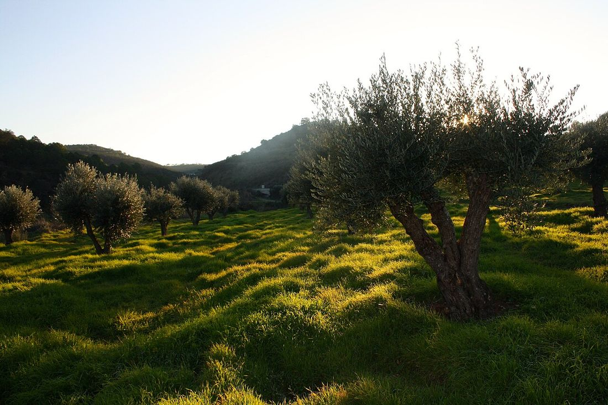
Azeite
L'or vert
Le Portugal compte parmi les dix plus grands producteurs d'huile d'olive au monde, surtout grâce à l'Alentejo. Sur la table portugaise, l'azeite est partout : sur la morue, les légumes, ou simplement avec du pain.
Terre d'accueil
Longtemps pays d'émigration, le Portugal attire aujourd'hui : plus de 1,5 million d'étrangers y vivaient fin 2024, surtout des Brésiliens.
LE PORTUGAL DANS LE MONDE
Un petit pays, une grande voix
OTAN
Membre fondateur en 1949.
Union européenne
Membre depuis 1986. António Costa préside le Conseil européen depuis 2024.
ONU
António Guterres, ancien Premier ministre portugais, est secrétaire général de l'ONU depuis 2017.
CPLP
La Communauté des pays de langue portugaise réunit 9 pays sur 4 continents.
UN PAYS PIONNIER
Des choix qui ont fait école
1867
L'un des premiers pays au monde à abolir la peine de mort pour les crimes civils. Victor Hugo félicite alors le Portugal d'être à l'avant-garde de l'Europe.
2001
Dépénalisation de la consommation de toutes les drogues : les consommateurs sont orientés vers les soins plutôt que vers la prison. Le trafic reste un crime, et les contaminations au VIH liées aux seringues chutent fortement.
2010
Le mariage est ouvert aux couples de même sexe.
7e
pays le plus pacifique du monde selon le Global Peace Index 2025, et dans le top 10 depuis 2015.
Une culture façonnée par la mer, la musique et la table, transmise de génération en génération.
ARTS & PATRIMOINE
L'âme portugaise
Le fado
Chant mélancolique accompagné de la guitare portugaise. Amália Rodrigues en est la grande voix. Patrimoine immatériel de l'UNESCO depuis 2011.
Les azulejos
Carreaux de faïence peints, souvent bleus et blancs, qui décorent églises, gares et façades.
L'art manuélin
Style de l'époque des Découvertes, riche en motifs marins : cordages, coquillages, sphères armillaires. Exemple : le monastère des Hiéronymites.
La littérature
Luís de Camões (Les Lusiades, 1572), Fernando Pessoa et José Saramago, prix Nobel de littérature 1998.
ÉTUDES & TRADITIONS
Universités, capes noires et Harry Potter
Au Portugal, la vie étudiante a ses propres traditions, connues dans le monde entier.
L'Université de Coimbra
Fondée en 1290 par le roi Dinis Ier et installée définitivement à Coimbra en 1537, c'est l'une des plus anciennes universités du monde. Elle est classée à l'UNESCO depuis 2013, avec sa splendide bibliothèque baroque, la Joanina.
Les étudiants « trajados »
Costume noir et grande cape : c'est le traje académico. Selon la tradition, la cape ne se lave pas et chaque déchirure rappelle une personne ou un moment important. En mai, la Queima das Fitas fête la fin des études.
La Livraria Lello, à Porto
Ouverte en 1906, avec son escalier rouge et ses boiseries sculptées, elle est souvent citée parmi les plus belles librairies du monde. Il faut parfois faire la queue pour y entrer !
Et Harry Potter ?
J.K. Rowling a vécu à Porto au début des années 1990 : elle y enseignait l'anglais et écrivait déjà Harry Potter. On dit que les capes des étudiants ont inspiré les robes de Poudlard, et Lello sa bibliothèque… mais Rowling affirme n'être jamais entrée chez Lello !
À TABLE !
Une cuisine simple et généreuse
Poisson frais, huile d'olive, ail et bons produits du terroir : la cuisine portugaise se partage en famille.
Bacalhau
La morue, plat national. On dit qu'il existe plus de 365 recettes : une pour chaque jour de l'année !
Pastel de nata
Petit flan à la crème dans une pâte feuilletée, né au monastère des Hiéronymites à Belém.
Francesinha
La spécialité de Porto : un sandwich généreux nappé de fromage fondu et d'une sauce épicée.
Sardinhas assadas
Sardines grillées, reines des fêtes populaires de juin.
Caldo verde
Soupe au chou vert, à la pomme de terre et au chouriço.
Leitão da Bairrada
Cochon de lait rôti, spécialité de la Bairrada, tout près de chez moi.
Polvo à lagareiro
Poulpe rôti au four avec beaucoup d'huile d'olive et d'ail, servi avec des pommes de terre « a murro », écrasées d'un coup de poing.
Cataplana
Fruits de mer cuits à l'étouffée dans une casserole en cuivre en forme de coquillage : la spécialité de l'Algarve.
Bifana
Petit pain garni de porc mariné à l'ail et au vin blanc : le casse-croûte préféré des Portugais.
Queijo Serra da Estrela
Fromage de brebis si crémeux qu'on le mange à la cuillère, fabriqué dans la région de la Serra da Estrela, voisine de Viseu.
Alheira
Saucisse à base de volaille et de pain. Selon la tradition, des Juifs l'auraient inventée sous l'Inquisition pour faire croire qu'ils mangeaient du porc.
Ovos moles de Aveiro
Douceur d'Aveiro au jaune d'œuf et au sucre. On raconte que beaucoup de desserts portugais sont nés dans les couvents, où les blancs d'œufs servaient à amidonner le linge.
LES VINS
Vinho do Porto
Vin doux de la vallée du Douro, l'une des plus anciennes régions viticoles délimitées au monde (1756).
Vinho verde
Vin jeune et frais du Minho, au nord du pays.
Dão
Les vins rouges de la région de Viseu, ma région d'origine.
Les missionnaires portugais mangeaient du poisson et des légumes frits pendant les jours de jeûne des « Quatre-Temps » (têmporas) : une origine probable de la tempura.
INDE
Vindaloo
Ce curry de Goa tire son nom de la « carne de vinha d'alhos », une viande marinée au vin et à l'ail apportée par les Portugais.
ASIE & AFRIQUE
Piri-piri
Les navigateurs portugais ont diffusé le piment venu d'Amérique, jusqu'en Inde et en Thaïlande.
JAPON
Kasutera
Ce gâteau japonais vient du « pão de Castela », le gâteau de Castille apporté par les Portugais à Nagasaki.
EUROPE
Marmelada
Le mot « marmelade » vient du portugais « marmelada », une pâte de coings.
FÊTES & TRADITIONS
Juin, le mois de la fête
10 juinDia de Portugal
Fête nationale, en l'honneur de Camões et des communautés portugaises dans le monde.
13 juinSanto António
Lisbonne fête saint Antoine : sardines grillées, musique et marches populaires dans les quartiers.
23–24 juinSão João
À Porto, toute la ville sort dans la rue, avec des petits marteaux en plastique et des feux d'artifice.
Né à Funchal (Madère) en 1985. Cinq Ballons d'or et meilleur buteur de l'histoire des sélections nationales.
Les légendes
Eusébio, Luís Figo (Ballon d'or 2000) et l'entraîneur José Mourinho ont aussi marqué l'histoire du football.
Os três grandes
Benfica et Sporting (Lisbonne), FC Porto : trois clubs qui divisent les familles… dans la bonne humeur !
Eusébio
Eusébio, la « Panthère noire », né au Mozambique, meilleur buteur de la Coupe du monde 1966 avec 9 buts.
AU-DELÀ DU FOOTBALL
D'autres fiertés sportives
Surf à Nazaré
La plus grande vague jamais surfée y a été mesurée : 26,21 m, la hauteur d'un immeuble d'environ 8 étages (Sebastian Steudtner, 2020).
Rink-hockey
L'une des plus grandes nations du hockey sur patins à roulettes, avec plus de 15 titres de champion du monde.
Athlétisme
Carlos Lopes (1984) et Rosa Mota (1988) ont remporté l'or olympique au marathon.
Futsal
Champion du monde en 2021, champion d'Europe en 2018 et 2022, finaliste en 2026.
Rosa Mota et Carlos Lopes lors d'une course populaire à Faro.
ATHLÉTISME
Les rois du marathon
Carlos Lopes
Champion olympique du marathon à Los Angeles en 1984, à 37 ans, puis record du monde en 2 h 07 min 12 s à Rotterdam en 1985. Il a aussi été trois fois champion du monde de cross-country.
Rosa Mota
Bronze en 1984, puis championne olympique du marathon à Séoul en 1988 : la première Portugaise sacrée aux Jeux. Championne du monde en 1987 et trois fois championne d'Europe.
1984OR OLYMPIQUE — CARLOS LOPES
1988OR OLYMPIQUE — ROSA MOTA
2:07:12RECORD DU MONDE (1985)
Un avion de course au-dessus du Douro, face à Porto (édition 2017).
PORTO & GAIA, AU-DESSUS DU DOURO
Red Bull Air Race
En 2007, la course d'avions la plus rapide du monde arrive à Porto : les pilotes slaloment entre des pylônes gonflables à quelques mètres au-dessus du Douro, sous le pont Dom Luís. Environ 600 000 spectateurs envahissent les deux rives dès la première édition, puis près d'un million en 2008 : un record pour la compétition.
Du Minho à l'Algarve, jusqu'au milieu de l'Atlantique
Cinq régions sur le continent et deux archipels autonomes : sept visages d'un même pays.
SEPT RÉGIONS
Un voyage du nord au sud
1
Le Nord
Porto · Braga · Guimarães
Région verte et montagneuse. Guimarães est considérée comme le berceau du Portugal ; la vallée du Douro et ses vignes en terrasses sont classées à l'UNESCO.
2CHEZ MOI
Le Centre
Coimbra · Aveiro · Viseu
Terre de contrastes : l'université de Coimbra (1290), Aveiro et ses canaux, la Serra da Estrela… et Caramulo, mon village !
3
Lisbonne
Lisboa · Sintra · Cascais
La capitale, ville aux sept collines au bord du Tage, avec ses trams jaunes, Belém et les palais romantiques de Sintra.
4
L'Alentejo
Évora · Beja
Vastes plaines dorées, oliviers et chênes-lièges : le Portugal produit environ la moitié du liège mondial. Évora est classée à l'UNESCO.
5
L'Algarve
Faro · Lagos
Plages de sable doré, falaises spectaculaires et plus de 300 jours de soleil par an.
6RÉGION AUTONOME
Les Açores
Ponta Delgada
Neuf îles volcaniques au milieu de l'Atlantique : lacs de cratère, sources chaudes et le Pico, plus haut sommet du pays.
7RÉGION AUTONOME
Madère
Funchal
L'« île de l'éternel printemps » : levadas, fleurs, vin de Madère… et ville natale de Cristiano Ronaldo.
ZOOM SUR CHEZ MOI
Caramulo, la montagne de l'air pur
En 1921, le docteur Jerónimo de Lacerda fonde à Caramulo une station sanatoriale, qui comptera jusqu'à une vingtaine de sanatoriums : on venait de tout le pays soigner la tuberculose grâce à l'air pur de la montagne. Plus tard, ses fils créent le Musée du Caramulo, qui réunit une collection d'art — de l'Égypte ancienne à Picasso — et une magnifique collection de voitures et de motos anciennes.
1 076 mAltitude du Caramulinho, le sommet de la serra
1921Création de la station sanatoriale (une vingtaine de sanatoriums)
1953Fondation du Musée du Caramulo
CHAQUE SEPTEMBRE À CARAMULO
Caramulo Motorfestival
Chaque année début septembre, Caramulo devient la capitale portugaise du moteur. Organisé par le Musée du Caramulo, le Caramulo Motorfestival est la plus grande fête automobile du Portugal : la Rampa Histórica, une course de côte de voitures anciennes et de compétition sur les routes de la serra, des défilés, des expositions et même un air show. L'entrée est libre ! En 2026, plus de 60 000 personnes sont venues à Caramulo.
Avant de partir pour la Suisse, j'ai vécu à Santa Maria da Feira, à une trentaine de kilomètres au sud de Porto. La ville est dominée par l'un des plus beaux châteaux médiévaux du Portugal.
Chaque été depuis 1996, toute la ville remonte le temps pendant une douzaine de jours : tournois de chevaliers, spectacles, musique, fauconnerie et marchés d'époque. C'est la plus grande reconstitution médiévale de la péninsule Ibérique, avec des centaines de milliers de visiteurs.
Pendant des siècles, les hommes ont taillé à la main des terrasses dans les collines de schiste pour y planter la vigne. C'est ici que naît le célèbre vin de Porto, transporté autrefois jusqu'à Porto sur les bateaux rabelos.
Patrimoine mondial de l'UNESCO depuis 2001
Région viticole délimitée dès 1756, l'une des plus anciennes du monde
2
NORD · PORTO
Porto et le pont Dom Luís I
Inauguré en 1886, le pont Dom Luís I relie Porto à Vila Nova de Gaia par une arche de fer de 172 m. Il a été conçu par Théophile Seyrig, ancien associé de Gustave Eiffel. À ses pieds, les maisons colorées de la Ribeira se reflètent dans le Douro.
Deux tabliers : le métro en haut, les voitures en bas
Centre historique classé à l'UNESCO en 1996
En face, à Gaia, le vin de Porto vieillit dans les caves, comme autrefois quand il descendait le Douro sur les bateaux rabelos.
3
CENTRE · RIA DE AVEIRO
Aveiro, la « Venise du Portugal »
Ses canaux sont parcourus par les moliceiros, des bateaux colorés qui servaient autrefois à récolter le moliço, une algue utilisée comme engrais. Autour de la ville, les salines produisent depuis des siècles un sel marin récolté à la main.
Environ 2 600 hectares de salines dans la Ria
La fleur de sel : la fine couche de sel récoltée à la surface
Les salines d'Aveiro
4
CENTRE · LEIRIA
Le monastère de Batalha
L'une des « 7 Merveilles du Portugal » (2007)
Le roi Jean Ier le fait construire à partir de 1386 pour remercier la Vierge de la victoire d'Aljubarrota contre la Castille (1385), qui sauve l'indépendance du Portugal. Il y repose avec son épouse anglaise, Philippa de Lancastre, et leur fils, Henri le Navigateur.
Patrimoine mondial de l'UNESCO depuis 1983
Plus d'un siècle de travaux, du gothique au manuélin
5
LISBONNE · SERRA DE SINTRA
Le palais de la Pena, Sintra
L'une des « 7 Merveilles du Portugal » (2007)
Perché au sommet de la serra, ce palais aux couleurs vives a été construit au XIXe siècle pour le roi Ferdinand II. Avec ses jardins, ses châteaux et ses forêts, Sintra ressemble à un conte de fées.
Paysage culturel de Sintra : UNESCO depuis 1995
Chef-d'œuvre du romantisme en Europe
6
LISBONNE · BELÉM
La tour de Belém
L'une des « 7 Merveilles du Portugal » (2007)
Construite de 1514 à 1519 sur le Tage, elle protégeait l'entrée de Lisbonne et saluait les navigateurs qui partaient vers l'Afrique, l'Inde et le Brésil. C'est l'un des symboles de l'époque des Découvertes.
Patrimoine mondial de l'UNESCO depuis 1983
Chef-d'œuvre du style manuélin
7
LISBONNE · BELÉM
Le monastère des Hiéronymites
L'une des « 7 Merveilles du Portugal » (2007)
Commandé par le roi Manuel Ier au début du XVIe siècle et financé grâce au commerce des épices, il célèbre le voyage de Vasco de Gama. On y trouve les tombeaux de Vasco de Gama et du poète Luís de Camões. Et c'est de ses moines que vient la recette du pastel de nata !
Patrimoine mondial de l'UNESCO depuis 1983
Tombeaux de Vasco de Gama et de Camões
8
LISBONNE · PARQUE DAS NAÇÕES
Le pont Vasco de Gama et l'Expo 98
Inauguré le 29 mars 1998 pour l'Exposition universelle, 500 ans après l'arrivée de Vasco de Gama en Inde, ce pont à haubans traverse l'estuaire du Tage. L'Expo 98, sur le thème « Les océans, un patrimoine pour le futur », a accueilli plus de 10 millions de visiteurs et a transformé tout un quartier de Lisbonne.
17,2 km de long, dont 12,3 km au-dessus de l'eau
Le plus long pont d'Europe à son ouverture
Le site de l'Expo 98, aujourd'hui Parque das Nações
L'Oceanário de Lisbonne
Construit pour l'Expo 98, c'est l'un des plus grands aquariums d'Europe, avec un bassin central de 5 millions de litres. Les voyageurs de TripAdvisor l'ont élu meilleur aquarium du monde en 2015, 2017 et 2018.
9
ALENTEJO · FLEUVE GUADIANA
Le lac d'Alqueva
Créé par le barrage d'Alqueva sur le Guadiana et rempli en 2010, ce lac immense irrigue l'Alentejo, produit de l'électricité et offre un ciel parmi les plus étoilés d'Europe.
Le plus grand lac artificiel d'Europe occidentale : environ 250 km²
Plus de 1 100 km de rives : plus que toute la côte du Portugal continental !
10
ALGARVE · LAGOA
La grotte de Benagil
Creusée par la mer dans les falaises dorées de l'Algarve, cette grotte possède une ouverture dans son plafond : « l'œil », par où entre la lumière du soleil. On ne peut l'atteindre que par la mer, en bateau ou en kayak.
Accessible uniquement par la mer
Parmi les grottes marines les plus célèbres du monde
N222
DOURO · DE GAIA À ALMENDRA
La route N222
La route nationale 222 longe le Douro sur environ 226 km, de Vila Nova de Gaia jusqu'à Almendra, près de Vila Nova de Foz Côa. Son tronçon le plus célèbre, entre Peso da Régua et Pinhão, serpente au bord du fleuve, au milieu des vignobles en terrasses. En 2015, une étude du loueur de voitures Avis l'a classée meilleure route du monde à conduire.
27 km et 93 virages entre Régua et Pinhão
« Meilleure route du monde à conduire » (étude Avis, 2015)
Au cœur du Haut-Douro viticole, classé à l'UNESCO en 2001
Les vignobles en terrasses que traverse la route.
Et pour finir… ce que le Portugal représente pour moi.